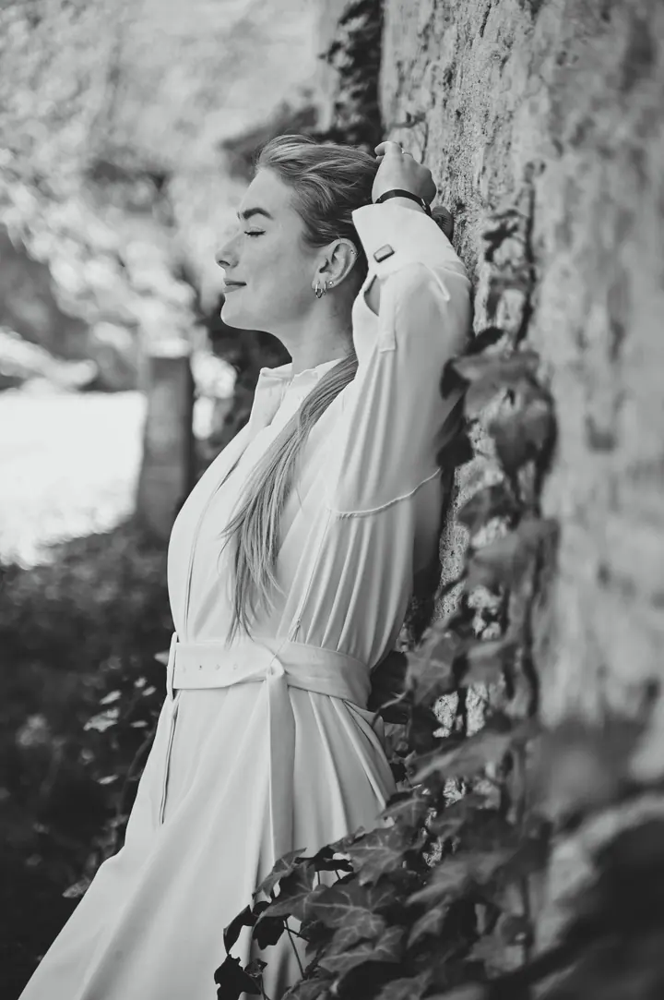
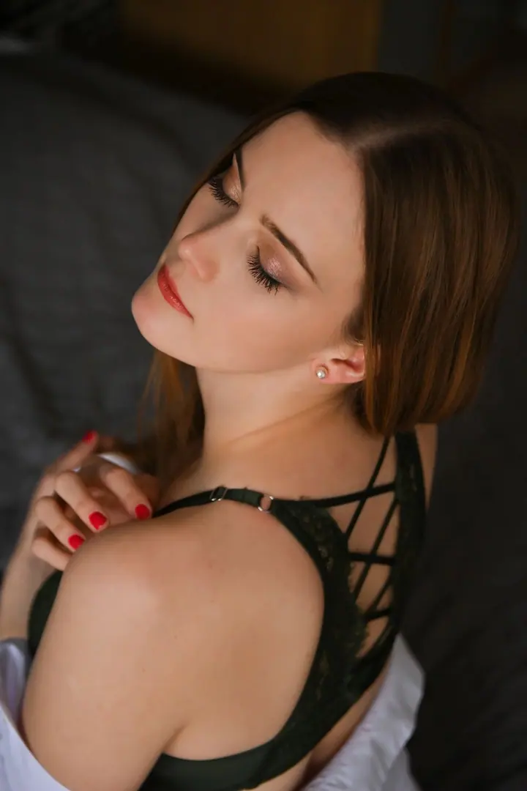
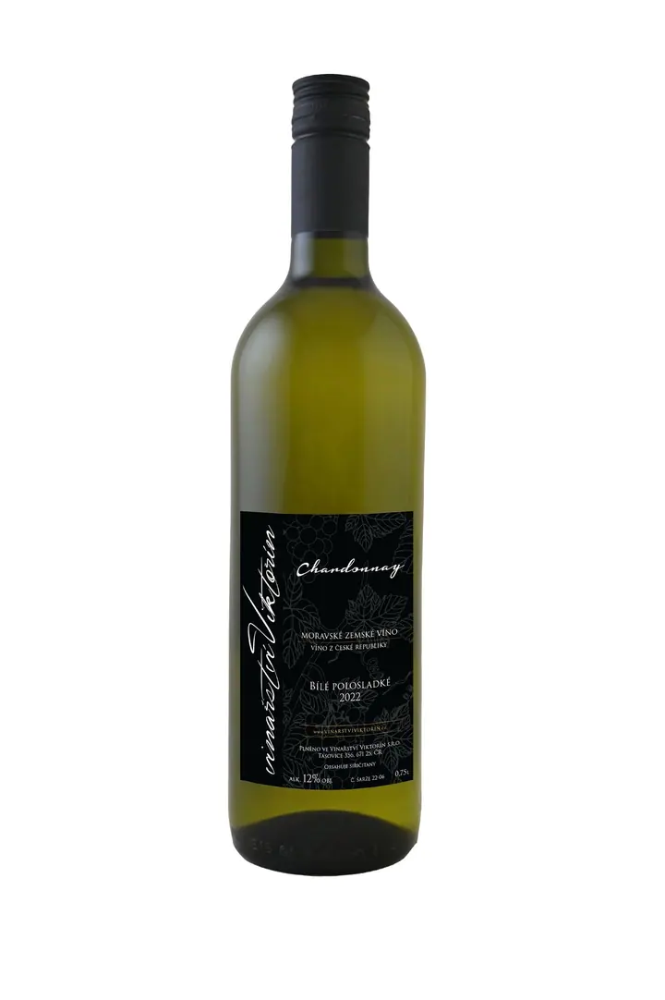
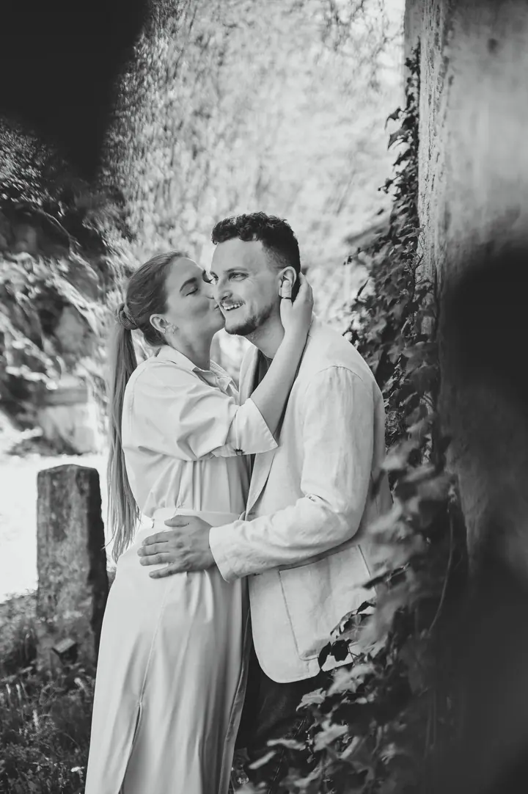

jedna
Svatební focení
Svatby fotím přirozeně, bez strojených póz a zbytečného stresu. Vyberete si z balíčků Mini, Klasik a Maxi, od samotného obřadu až po celý den do prvního tance.

Svatební a rodinná fotografka · Stříbro, Tachov, Plzeň

Jmenuji se Věra Lukešová, ale klidně mi říkejte Věrka. Jsem svatební a rodinná fotografka ze Stříbra a už více než 12 let fotím svatby přirozeně, bez strojených póz. Za svými páry ráda vyrazím po celém Plzeňském kraji i kamkoliv dál.
Více o mně
Co fotím
jedna
Svatby fotím přirozeně, bez strojených póz a zbytečného stresu. Vyberete si z balíčků Mini, Klasik a Maxi, od samotného obřadu až po celý den do prvního tance.
dvě
Klidné focení ve dvou, v lese, na louce nebo na místě, které máte rádi. Nemusíte vědět, jak se postavit ani kam se dívat.
tři
Fotím rodiny, děti, jednotlivce i těhotenské focení, nejčastěji venku v okolí Stříbra a Plzně. Fotky dostanete v barevné i černobílé verzi.
Jemné a citlivé focení pro vás samotné, v klidu a bez spěchu.
Žádné křečovité pózování, jen váš den.

Za objektivem
Věnuji se především svatební fotografii. Za více než 12 let jsem nafotila přes 150 svateb a nejčastěji mě potkáte v okolí Stříbra, Tachova, Plané a Plzně. Ráda ale přijedu i do Karlovarského, Středočeského a Jihočeského kraje, do Prahy nebo kamkoliv jinam, protože ráda poznávám nová místa.
Často ode mě slýchám: „My se neumíme fotit.“ Právě proto vás během focení jemně navedu, když je potřeba, ale většinu dne nechávám přirozeně plynout. Na svatbě jsem v tom s vámi. Směju se s vámi, občas poradím, občas uklidním a pomůžu pohlídat, aby den běžel hladce.
Kromě svateb fotím i rodiny, děti, páry, těhotenské a boudoir focení. Nejraději venku, v lese, na louce nebo na místě, které pro vás něco znamená. Chci, abyste si společný čas užili a na fotkách poznávali sami sebe.
Věra
Pošlete mi datum a místo svatby a svou představu o focení. Odpovídám nejpozději do 24 hodin.
V balíčcích Klasik a Maxi je předsvatební schůzka i focení v ceně. Poznáme se a zjistíte, že se před foťákem nemusíte bát.
Fotím přípravy, obřad, společné fotky i hostinu podle zvoleného balíčku. Většinu času vás nechám užívat si den a navedu jen tam, kde je potřeba.
Dostanete upravené i neupravené fotografie na USB, online galerii s možností tisku a tištěné fotografie podle vlastního výběru.
Portfolio
Fotografie jsou ilustrační
Otázky
Vůbec ne, to slýchám nejčastěji. Když bude potřeba, jemně vás navedu, jinak nechám den přirozeně plynout. Žádné křečovité pózování ani stres z foťáku.
Ano. Nejčastěji fotím v Plzeňském, Karlovarském, Středočeském a Jihočeském kraji a v Praze, ale dojedu kamkoliv. V balíčcích Klasik a Maxi je doprava po celé ČR v ceně.
Upravené i neupravené fotografie na USB, online galerii s možností tisku a tištěné fotografie podle vlastního výběru: 20, 35 nebo 50 kusů podle balíčku.
Rodinné a párové focení začíná na 800 Kč, od půl hodiny focení a od 5 upravených fotografií. Fotky dostanete v barevné i černobílé verzi.